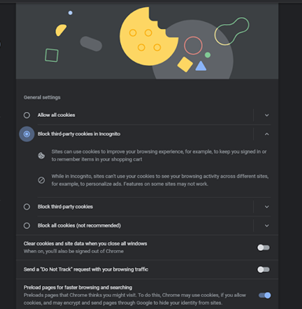
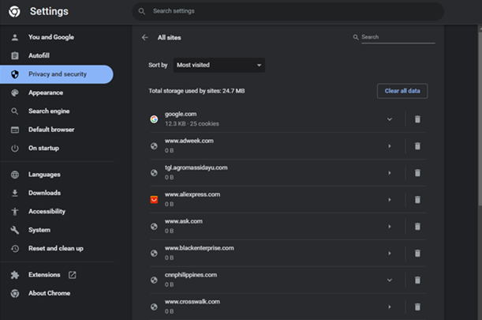
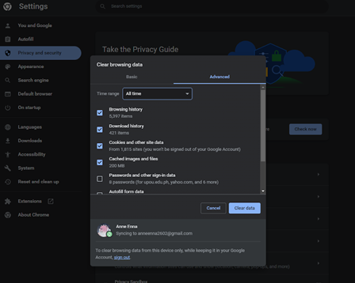

Manage your cookies
One of the aspects of ensuring your safety and privacy online is proper management of cookies, which are described as small text files that are left behind in your browser every time you access a website or an application. These are not inherently bad, because its primary purpose is to aid in optimization, which in turn helps provide a smoother and overall better experience for the visitors of the site. There are two types of cookies:
- First-Party Cookies: These are created to be used in one domain only, and are not shared anywhere else such as other websites and partner advertisers. This is responsible for remembering information about you such as your username and password in that website for an easier and faster login. These cookies essentially help with improving user experience.
- Third-Party Cookies: From the compound word, third-party, companies and websites other than the origin are involved. These cookies are created in one website and shared with third-party websites, as their main purpose is to track your online behavior and activities in order to give you ads based on those data.
Apparently, cookies, especially third-party cookies, can be invasive to one's privacy when they are used for targeted ads, such as Tiktok's personalized ads feature. Using cookies, as of today, is the most widely used method by companies in tracking users on the internet.
Picture this, you notice that your sneakers are worn out, and so you open your browser to look for a new pair that you may want to buy. You spend a decent amount of time hopping from one website to another in search for the best deal you can find on a pair of shoes. Then, you decide to put off your online window shopping and log into your Tiktok account instead to watch entertaining videos. However, you're shocked to see that the ads you see in your For You page are all about shoes. Does this sound familiar?
Social media platforms interact with your coookies to deliver customized ads
Such events happen when companies are able to obtain information regarding your browsing activity through cookies. You might find this convenient if you're constantly looking to purchase something in the market but otherwise, it is concerning that information you might not want to share with others are being used by these companies to get your attention.
In order to be free of their tracking schemes, you have to take measures to manage your cookies properly.
-
Blocking cookies: If you're using Google Chrome, just go to settings > privacy and security > cookies and other site data. Under the general settings tab, you have the option to either allow all cookies, block third-party cookies in incognito mode, block all third-party cookies, or block all cookies.

Sample screenshot on how to block cookies in Google Chrome -
Clearing cookies: You should note down all of your saved passwords across multiple websites and then proceed to clearing all cookies. Just go to your browser's settings > privacy and security > cookies and other site data > see all site data and permissions > clear all data.

Sample screenshot on how to clear cookies in Google Chrome -
Clearing browsing data: If you still want your login information and passwords to be saved, you can opt to clear browsing data instead. To do this, go to settings > privacy and security > clear browsing data > advanced. Then, from the drop down menu, click “All time”. Make sure that “Passwords and other sign-in data” remains unchecked, and then click “Clear data”.

Sample screenshot on how to clear browsing data in Google Chrome
Understanding how cookies work and what this implies for you as a user is vital to keeping your data safe and upholding your privacy in cyberspace. Hence, the measures stated above must be used along with other methods to ensure its effectiveness.